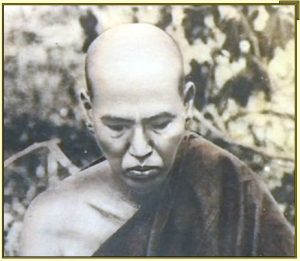

Леди Саядо (1846-1923)

Достопочтенный Леди Саядо родился в 1846 году на севере Бирмы — в деревушке Сайнь-Пьин возле Дипейина области Швебо (ныне — округ Моньва). В детстве его звали Маун Тет Кхаун. В деревне он ходил в школу при буддийском монастыре, в которой монахи обучали детей чтению и письму на бирманском, а также чтению палийских текстов. Благодаря таким монастырским школам, которые распространены по всей Бирме, многие умели читать и писать.
В возрасте 8 лет он начал обучение под руководством У Нанды-дхаи Саядо и в 15 лет получил младшее монашеское посвящение — саманера. Ему дали дхаммическое имя Нана-дхая, что означает «флаг мудрости». В монашеское образование входила грамматика языка пали и изучение различных текстов Палийского Канона с уклоном в Абхидхамматтха-сангаху — комментарий-руководство к Абхидхамме.
Позже он сам написал несколько противоречивый комментарий на Абхидхамматтха-сангаху, который назвал Параматтха-дипани (Руководство к Абсолютной Истине), в которой он исправил некоторые обнаруженные им ошибки. Его исправления со временем были приняты монахами и работа стала часто цитироваться.
Его юношеские дни саманеры он посвящал изучению писаний и вечерами собирался с другими монахами и саманерами для заучивания и повторения древних текстов наизусть. За счёт этого он стал знатоком текстов Абхидхаммы.
В возрасте 18 он снял обеты саманеры и вернулся к мирской жизни. Ему не нравилось его образование, поскольку он чувствовал, что оно слишком ограничено только одной лишь Типитакой. Через шесть месяцев его первый учитель, и другой влиятельный учитель — Мйинхтин Саядо, пытались убедить его вернуться к монашеской жизни, но он отказался. Тогда Мйинхтин Саядо настоял, чтобы тот, по крайней мере, продолжил своё образование. Маун Тет Кхаун был одарённым молодым человеком и охотно с этим согласился.
«Может ты хочешь изучать Веды, древние священные писания Индуизма?» — интересовался Мйинхтин Саядо
«С большим удовольствием» — отвечал Маун Тет Кхаун
«Тогда ты вновь должен стать саманерой» — отвечал Саядо — «иначе Саядо У Гандхама не возьмёт тебя в качестве ученика».
«Хорошо, стану саманерой» — согласился Маун Тет Кхаун.
Так он опять одел монашеские одежды, и, как показала история, уже на всю жизнь. Позже он вспоминал — «Я хотел зарабатывать на жизнь знаниями Ведов, чтобы научиться предсказывать людям удачу. Но моё счастье, что я стал опять саманерой. Мои учителя были очень мудры. Их безграничная любовь и сострадание спасли меня».
Маун Тет Кхаун изучил Веды за 8 месяцев и продолжил изучение Типитаки. 20 апреля 1866, в возрасте 20 лет, он становится бхиккху под учительством его старого наставника У Нанды-дхая Саядо.
В 1867 он отправился в Мандалай для дальнейшего обучения. В это время Мандалай был королевской столицей Бирмы (время правления короля Мин Дон Мина) и был самым важным городом в Бирме с точки зрения получения образования. Там он учился под руководством известнейших учёных монахов и учителей-мирян. Он обучался у Достопочтенного Сан-Кйаун Саядо, известного учителя, который перевёл Висуддхимаггу на бирманский язык. В это время Сан-Кйаун Саядо устроил экзамен из 20 вопросов для 2000 студентов, и только Маун Тет Кхаун смог удовлетворительно ответить на все 20. Эти вопросы были позже изданы в 1880-ом в буклете Парами-дипани (Руководство Совершенств), первой из многих книг на пали и бирманском, который написал Дост. Леди Саядо.
Во время его обучения в Мандалае, король Мин Дон Мин спонсировал Пятый Буддийский Собор, созвав отовсюду многочисленных монахов для очищения Типитаки. Маун Тет Кхаун помогал в переводе и редакции текстов Абхидхаммы.
Будучи монахом 8 лет, сдав все экзамены, Маун Тет получил квалификацию учителя по вводным курсам Пали в монастыре Маха-Джотикарама, где он и учился. Там он оставался ещё 8 лет, обучая других и продолжая совершенствовать собственные знания, а в 1882 переехал в Моньву. Тогда ему было 36 лет. В то время Моньва была небольшим региональным центром, известным однако, за то, что здесь обучали всей Типитаке целиком, а не отдельным её фрагментам. Здесь он обучал пали монахов и саманер, а вечера проводил, практикуя медитацию.
В 1885-ом Британия захватила северную Бирму и отправила последнего короля Тхибау в изгнание. В 1886-ом Маун Тет ушёл в затворничество в лес Леди, к северу от Моньвы. Через некоторое время к нему стали приходить многочисленные монахи с просьбой обучать, и так был основан монастырь Леди-тавья. Так Маун Тет взял себе новое имя — Леди Саядо. Говорят, что Моньва выросла в большой город из-за людей, желающих посетить этот монастырь. Тем временем Леди Саядо продолжал обучать монахов и практиковал в уединении в небольшом домике, что находился на другом берегу реки.
Через 10 лет стали издаваться его главные книги. Первой была Параматтха-дипани (Руководство к Абсолютной Истине). Она была издана в 1897. Второй книгой стала Нирутта-дипани, учебник по палийской грамматике. Благодаря этим книгам Леди Саядо стал известен как один из выдающихся учёных монахов Бирмы.
Несмотря на то, что он проживал в своём монастыре, он совершал путешествия, обучая и медитации и Дхамме. В самом деле, Леди Саядо — уникальный монах, который смог совместить и глубокую учёность и практику. Во время этих поездок были опубликованы многие из его дальнейших работ. Например, он за два дня написал Патичча-Самуппада-дипани, во время речного путешествия из Мандалая в Пром. У него с собой не было других книг, но поскольку он в совершенстве знал Типитаку, они ему и не были нужны. В списках его работ порядка 76 наименований — инструкций, комментариев, очерков и так далее. И даже этот список не полон.
Позже он ещё писал и другие книги по Дхамме на бирманском. Он говорил, что хотел, чтобы эти книги смог понять даже простой фермер. До него такие попытки прежде никогда не делались в Бирме. Монахи обычно заучивали длинные фрагменты на пали, и потом дословно их переводили. Это было крайне трудно понять простому люду.
В своих путешествиях по Бирме Леди Саядо говорил о том, что не приветствует потребления коровьего мяса. Он написал книгу «Го-мамса-матика», в которой высказал обращение к людям не убивать коров и стараться придерживаться вегетарианской диеты.
В этот же период, в самом конце столетия, его посещает У По Тхет, который позже становится одним из самых известных мирян — учителей медитации (под именем Сайя Тхетджи).
В 1911 репутация Леди Саядо стала настолько огромной, что Британское правительство Индии, которое также правило Бирмой, наградило его титулом Аггамаха-пандита (самый великий учёный). Ему также дал докторскую степень по литературе Университет Рангуна. В 1913-1917 он вёл переписку с миссис Райс-Дэвидс из Общества Палийских Текстов Лондона и некоторые из его комментариев по Абхидхамме были обуликованы в Журнале Общества Палийских Текстов.
В последние годы жизни у Леди Саядо сильно ухудшилось зрение из-за многочисленных лет чтения, изучения и письма при плохом освещении. В возрасте 73 лет он ослеп и посвятил остаток своих лет только медитации и обучению медитации. Умер в 1923 году в возрасте 77 лет в Пьинмане, между Мандалаем и Рангуном, в одном многих из монастырей, которые были построены в результате его поездок по Бирме.